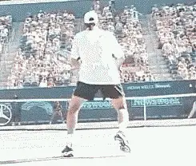
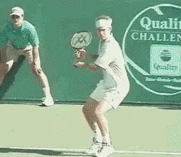
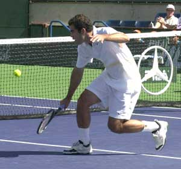
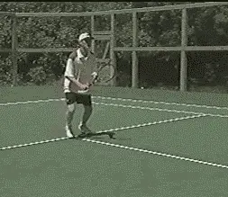
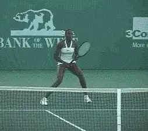

The Approach and Volley¶
The Approach and Volley¶
By Allen Fox¶
The Approach¶

¶Here Rafter moves forward with his shoulders coiled and his racquet back, then slices the approach shot, and continues on to the net.¶
The purpose of the approach shot is to get you to the net and in position to make a clean volley. [The best ball to approach on is a short ball, one that lands on or near the service line because from there, you can get to the net with the fewest steps.]
By moving to the net behind your stroke, you are in a sense running forward as you hit the ball. Moving forward while hitting the ball will add power to your stroke so a shorter backswing is necessary to reduce the amount of power you impart to the ball. Also, because you're inside the court a bit, the distance to your opponent's baseline is shorter so again you don't need to get as much power as you do when you're back behind the baseline.
As you run toward the ball, your shoulders should be rotated, and your body almost sideways to the net. After contact, continue on toward the net.
Try to stay relaxed, since your body is somewhat tilted, and twisted, as you rotate forward and step on through. Good balance is the key to a successful approach shot.
On the backhand side, most one-handed players find it difficult to hit and control a topspin approach shot. I recommend that these players slice the approach shot because it is a physically easier stroke to control. When executing this slice approach, swing forward and through the ball. Avoid chopping down to much and, of course, finish out the follow through.
Approach Down the Line¶

\ Mac slices the approach down the line then easily covers the crosscourt pass.Most approach shots should be hit down the line. [That's the safest position to hit the ball because your position on the court will [allow you to get to the net quicker] (the shortest distance to the net) and [allow you to cover the down the line passing shot] which is the shortest distance the ball can travel to get by you.]
Approaching down the line allows you to stay in control of the point until you have a clear opportunity to finish. [Hitting the approach crosscourt opens the court for your opponent to take control of the point.]
Approaching crosscourt is a fundamental mistake in net play at all levels - falling for the temptation to hit into what looks like a wide opening, only to be passed or lose control of the point.
Should you ever hit the approach crosscourt? Yes, if your opponent has a serious weakness on a particular side that you can easily exploit. If your opponent does not have a weakness and you choose to hit the approach crosscourt, you had better hit it a dog gone good one because if you don't hurt your opponent, he/she will have an opening to pass you right down the line.
[Again, the key is to move forward with the shoulders coiled and the racquet back.] [Then uncoil as you hit and step through. Remember to keep moving through the ball as you hit it. That gets you to the net quicker and allows you to close down the passing angles].

\ Pete must hit the ball up over the net on this difficult low volley, so he can't hit the ball too hard if he's going to keep it in play.The Volley¶
It's very rare for a player to have an excellent volley game and an excellent set of groundstrokes. Generally, the players who have good groundstrokes have poor volleys, and the ones who have good volleys have poor groundstrokes and that's because the entire concept of the two is reverse. On the groundstroke you're concerned mostly about power and control so you try to set up a stable base and you rotate off of that stable base when executing the stroke. But at the net, volleyers are moving so there's not a stable stroke.
Where should you position yourself for the volley? The trick at the net is to get as close as you safely can. It's easy to knock off almost any volley while standing on top of the net. If you are standing farther back, volley's become increasingly more difficult, From the service line, even high volleys, become difficult.
The problem is, standing on top of the net makes it relatively easy for your opponent to lob the ball over your head. So, the volleyer has several things he's trying to accomplish at once.
First, he can't move in too close to the net before he knows what his opponent's going to do, whether his opponent's going to lob or hit a ground stroke. So the safest position at the net is about a third of the way in from the service line to the net. This is where the volleyer should stand while he's waiting for the opponent to commit.
As soon as the volleyer sees the opponent is going to hit a groundstroke and not a lob, he/she should start moving forward and if possible, get right on top of the net. Then he/she can hit down on the ball and create extremely sharp angles. From further away from the net, the volleyer's angles are reduced and it becomes more difficult to end the point.

Also, hanging back allows the ball to drop lower forcing the volleyer to hit up over the net so the ball can't hit the ball very hard.
The third reason you want to get in close when you hit the volley is because the closer you are to the net, the easier it is to cover more of the net. As an example, let's say your opponent hits a ball across the center angling away from you. If you're standing close to the net, you can reach it by taking one step, however, if you are standing farther back, you may have to take two or three steps. So, the closer you can get, the easier it is to cover the net. If your opponent never lobs, you generally cheat a little bit forward. If your opponent's a pretty good lobber, you have to hold back and wait and see what he's going to do.
Practicing the Volley¶
During match play, coordination and timing on the volley is difficult because you're usually moving forward during the stroke. Of course, it's easier to hit the volley standing still. You only have one velocity to worry about, the velocity of the ball coming at you.
And that's the way most people practice the volley, standing still or they may take one step into the ball as they block the shot. As I said before, hitting a standing volley is relatively simple. But during a match, you are rarely standing still when volleying. You're always moving forward and that's the way the volley should be practiced.

\ Most club players practice their volleys standing still but that's not the way the game is played.The volley is a coordination of eye, leg, and hands all together.
-
The eyes see the ball coming and try to distinguish whether it's a lob or a ground stroke.
-
When the eye decides it's a ground stroke, it transmits the message to the legs and you start to move forward.
-
Then you get the hands in place, and your legs drive you through. You're getting a great deal of your power from your legs alone.
The Stroke¶
The volley stroke is the opposite of a groundstroke. The groundstroke is hit low to high, with a fairly long backswing. The volley is hit high to low with almost no backswing.
The racquet starts out above the wrist and punches down and through the ball. Oddly enough, this is true even for low volleys. You hit down on the low volley kind of like a chip shot in golf where the club goes down and the ball goes up.
On the groundstroke, the racquet may be moving 50-60 miles an hour but on the volley, the racquet may be moving only 10-15 miles an hour that's because the stroke is much shorter. You don't need a lot of power because you're close to the net and you only have to hit the ball about half as far as you would hit a groundstroke. Also, the ball's got a lot of energy because it hasn't hit the court yet so you don't have to add much energy of your own.

\ Even on low volleys, Venus hits down and through the ball.It's important to stay relaxed and well balanced at the net. A lot of people make the mistake of trying to do too much with the ball when they get in trouble at the net. This is especially true on awkward or difficult to handle balls. For awkward volleys, the trick is to relax your hands and watch the ball closely. Try to manipulate it with the hands. The important thing is to get it over the net and work for another shot.
Because you are moving forward on the volley, you step with your left foot on the hit (forehand) and the right foot comes up parallel to the net after contact. That stabilizes you and allows you to gather your balance so you can move to either side for the next ball if necessary.
Remember, you're moving as you hit the ball, but you're not trying to run through it. You don't want to run two or three steps afterwards, just that one extra step to stabilize your position. Let your momentum carry your other leg through naturally.
If the ball is high, however, and it's a fairly easy put-a-way, then you don't have to worry about the next shot. Get to the net as fast as you can right on top of the net if possible and knock it off.
|  | Tennis is mentally the most difficult sport due to it's personal nature which makes winning and losing feel more |
| important than they are. In this new book, Allen offers his proven solutions to problems such as choking, reducing | |
| stress, finishing matches, and developing confidence. Based on a life time of high level play and coaching success, | |
| it's a must for all competitive players. | |
| [ to | |
| Order](http://www.amazon.com/Tennis-Winning-Mental-Allen-Fox/dp/0615407765/ref=sr_1_1?ie=UTF8&qid=1336083459&sr=8-1). |
|  | eminently preferable to losing. In his new book, The |
| Winner's Mind, Allen lays out an original step-by-step | |
| plan for succeeding at any of life's endeavors, based on | |
| his first hand and very personal observations of the | |
| careers of both world-class tennis players and successful | |
| businessman. The bottom line is that even if you are not a | |
| born champion--and only a tiny percentage of us are--you | |
| can still use the success strategies of champions to tilt | |
| the odds in your favor. Writing with brutal honesty and dry | |
| humor, Fox lays out the common mental characteristics of | |
| winners in sports and in life. He explains the critical | |
| role of intellect over emotion. He analyzes the struggle | |
| between ambition and fear and the insidious and pervasive | |
| fear of failure that undermines so many of us. He then | |
| outline how to confront and overcome these fears in your | |
| life and career, even when they are initially subconscious. | |
| Must reading from one of the great thinkers in tennis, and | |
| a Renaissance Man in life. [ to | |
| Order](http://www.tennis-warehouse.com/descpage-MIND.html). | |
| To purchase this book you can also send a check for \$17.95 | |
| to Allen Fox, 1120 Inverness Place, San Luis Obispo, CA. | |
| 93401. The price includes shipping. |
|  | insightful analysts in modern tennis. A top 10 |
| American player from the glory days before Open | |
| tennis, Fox played many of the legendary greats, among | |
| them Roy Emerson, Rod Laver, Stan Smith, and Arthur | |
| Ashe. At Pepperdine he developed the men's tennis | |
| program into an elite contender for national titles, | |
| and gave Brad Gilbert the insights that became the | |
| foundation for \"Winning Ugly\". His book Think to Win | |
| is a modern classic. He has also starred in a series | |
| of acclaimed videos, including Pro Secrets of Match | |
| Play and Allen Fox's Ultimate Tennis Lesson. | |